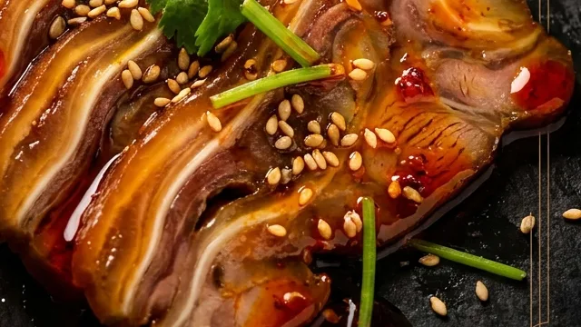
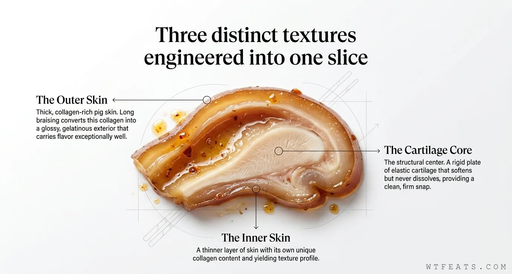
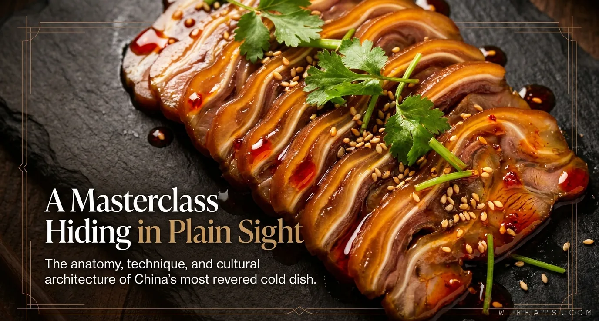

It's too chewy to enjoy.
The texture objection. But chewiness is a failure of technique, not anatomy. Slice it 2–3mm and the cartilage snaps cleanly.
No. 009 / Misunderstood Chinese Food
The cut that looks exactly like what it is, costs almost nothing, and somehow ends up on every serious cold appetizer platter in China. Western food culture says: no thank you. Chinese food culture says: perfect, slice it thin, we need it for the cold platter.

This is not a novelty or a punchline. It is a precisely structured piece of anatomy that responds to technique with a texture no other cut can replicate.
At 2–3 millimeters, cartilage provides a clean, satisfying snap. At 8 millimeters, the cartilage wins. Slice discipline is everything.
Fifteen minutes total. Singe, scrape, blanch. Practically instant by offal standards. The ear is still shaped like an ear — make your peace with it now.
What Is It?
There is no culinary sleight of hand here. No clever butchery that transforms it into something ambiguous. It arrives looking like an ear because it is an ear — complete with the curved outer rim, the inner ridges, the pointed tip, and the distinct silhouette that your brain recognizes instantly and files under "that is a body part."
What it contains is cartilage. An enormous amount of cartilage, arranged in a precise geometric structure that, when treated correctly, produces a texture unlike anything else in the culinary world. And texture, in Chinese cold dish culture, is everything.
The Anatomy
A cross-section of properly braised and chilled pig ear reveals the entire case: glossy gelatinous skin on the outside, firm-but-yielding cartilage in the center, glossy skin again on the other side. Three distinct textures in one thin slice, all carrying the flavor of whatever braising liquid they spent the last two hours in.

Myth vs Fact
The texture objection. But chewiness is a failure of technique, not anatomy. Slice it 2–3mm and the cartilage snaps cleanly.
A sharp knife, a cold ear, confidence in the cut. Two to three millimeters is the discipline. This is texture science, not preference.
Yes, it costs almost nothing. But its value is not in the price — it's in the texture combination that no other ingredient can replicate.
Cartilage wrapped in collagen-rich skin, responding to braising and chilling with a transformation unique in the culinary world.

Visual Story
Follow the pig ear from raw anatomy to cold platter: the West versus China, the three-layer cross section, the braise architecture, the slice thickness science, the dressing, the drinking culture, and the numbers that make the case.
See the geometryDeep Dive
The fifteen-minute cleaning, the master stock braise, the chilling transformation, the 2-3mm slice discipline, and the dressing architecture that makes every element do a specific job.
Read the articleGuide
A tidy table of contents for the overview, the shape, the craft, and what comes next.
Browse chaptersHow to Eat It
The intense soy-and-spice flavoring cuts through alcohol. The complex texture keeps the eating experience interesting across many pieces. The cold temperature is refreshing.
In virtually every Chinese city, pig ear occupies a permanent spot on the cold appetizer menu of every restaurant that takes its xiàjiǔcài seriously.
Sesame oil, chili oil, raw garlic, light soy, black vinegar, sugar, and fresh chili — every element doing a specific job. None of it is decoration.